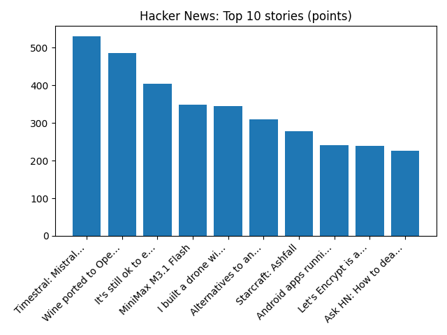

EXCLUSIVE: OpenAI seeks to accelerate fundraising ahead of Anthropic IPO, sources say - Reuters
Reuters — Headlines (Google News)
YOUR DAILY INTELLIGENCE BRIEF · 2026-10-20
Global watch: EXCLUSIVE: OpenAI seeks to accelerate fundraising ahead of Anthropic IPO, sources say - Reuters, US officials plan to travel to Norway, Russia for Ukraine talks, sources say - Reuters.
Northern Virginia: Greeley Boulevard five-week closure at Rolling Road in West Springfield begins Oct. 21 - Virginia Department of Transportation (.gov), News | Washington Post to shutter longtime Northern Virginia printing plant - CoStar.

Global coverage includes EXCLUSIVE: OpenAI seeks to accelerate fundraising ahead of Anthropic IPO, sources say - Reuters; US officials plan to travel to Norway, Russia for Ukraine talks, sources say - Reuters; Five ways El Niño is affecting the weather around the world. Local coverage includes Greeley Boulevard five-week closure at Rolling Road in West Springfield begins Oct. 21 - Virginia Department of Transportation (.gov); News | Washington Post to shutter longtime Northern Virginia printing plant - CoStar.

Peter Vaško
He is most known for his time with Slovak First Football League side MFK Skalica. He currently coaches the U13 youth category of MFK Skalica.
https://en.wikipedia.org/wiki/Peter_Va%C5%A1ko
Treble Clef: Unusual X-ray Hot Radio Source
Runs so far today: 1